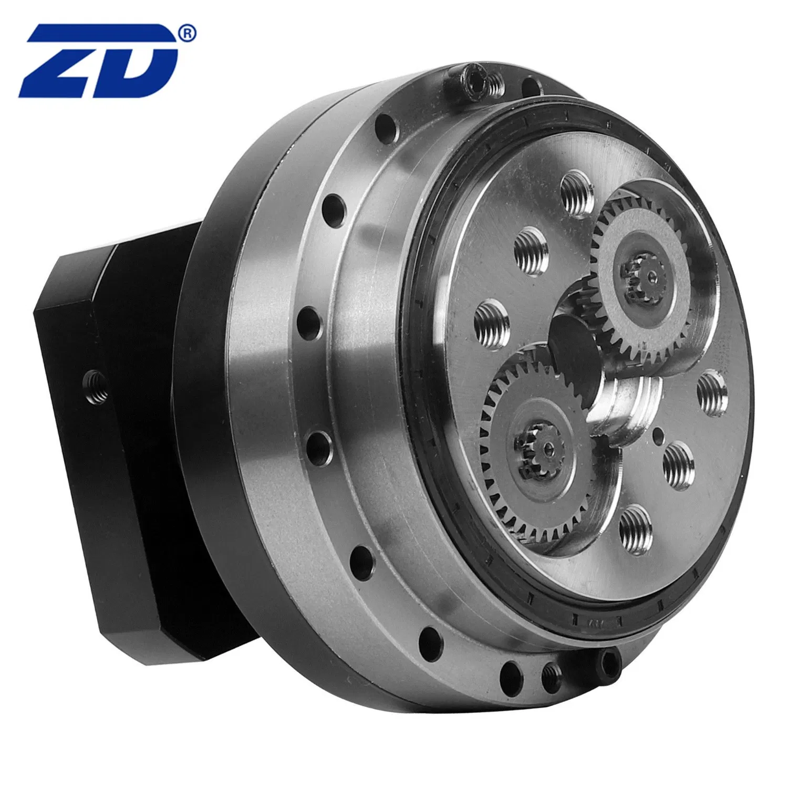

China's Harmonic Drive Suppliers
The companion piece — China's other reducer supply chain, ranked.
Harmonic drives get the headlines, but RV reducers carry the weight. Here is who makes them in China — and how they stack up against Japan's Nabtesco.

Everyone talks about harmonic drives, but the robot's heaviest joints run on RV reducers. RV (rotary vector) reducers sit in the base, shoulder and upper arm of industrial robots and the hip/knee of humanoids — anywhere torque, rigidity and shock resistance matter more than compactness. For years Japan's Nabtesco owned this market with a roughly 60% global share. China's suppliers are now breaking in.
By 2025, Chinese RV suppliers had grown to a combined share exceeding 30% of China-assembled industrial robots (CRIA / Interact Analysis). But the split is lopsided: Chinese-made RV units cover about 60% of low-to-mid-end robots, while heavy-payload machines above 20kg still import roughly 70% of their reducers. The gap is real but closing — Chinese units offer 1.5-2万 hours of life versus 4万 hours for top Japanese units, at about 30-40% of the price.
| Company | Shuanghuan Drive (双环传动) | Nantong Zhenkang (南通振康) | Zhongda Leader (中大力德) |
|---|---|---|---|
| HQ | Taizhou, Zhejiang | Nantong, Jiangsu | Ningbo, Zhejiang |
| China RV share | #1 domestic (~25-32%) | Top-tier (~22.6%) | Rising (~16.2% est. 2026) |
| 2025 volume | 128,000 units (+21.5%) | 124,000 units | — |
| Key edge | Heavy-load mass production, humanoid W-series | In-house cycloidal grinding | Cost-effective, broad range |
Through its controlled subsidiary HuanDong Tech (环动科技), Shuanghuan is China's #1 RV reducer maker and the only domestic brand that has reached meaningful scale in heavy-load units. It shipped about 128,000 RV units in 2025 (+21.5%) with gross margins above 35%, running at 108% capacity utilization. Its W-series humanoid reducers, designed for hip and knee joints, weigh 23% less than industrial models of the same torque, cut backlash below 15 arc-seconds, and have entered Xiaomi's CyberOne Gen-2 supply chain. Customers include Estun, UBTech and Unitree, with orders booked into late 2027.
Zhenkang leads with a fully self-controlled cycloidal-wheel precision grinding process and strong scale — about 124,000 RV units and RMB 585 million in revenue in 2025. It is the classic "quiet quality" supplier: less visible in media than Shuanghuan, but a reliable second source for domestic integrators.
Zhongda Leader is the fastest-rising name — GGII expects its share to climb to ~16.2% in 2026, helped by a broad reducer portfolio (harmonic, RV and planetary) and aggressive pricing. Qinchuan Machine Tool, a state-linked precision-machine maker, holds around 9.8% and brings heavy industrial manufacturing credibility. Smaller players like Feima Transmission (飞马传动) round out the domestic field.
The companion piece — China's other reducer supply chain, ranked.
China's global #2 harmonic drive maker and its race to the top.
The Ningbo reducer maker spanning harmonic, RV and planetary.
The state-linked precision maker pushing heavy-load localization.
Profiles, product pages and supplier analysis for China's robotics ecosystem.